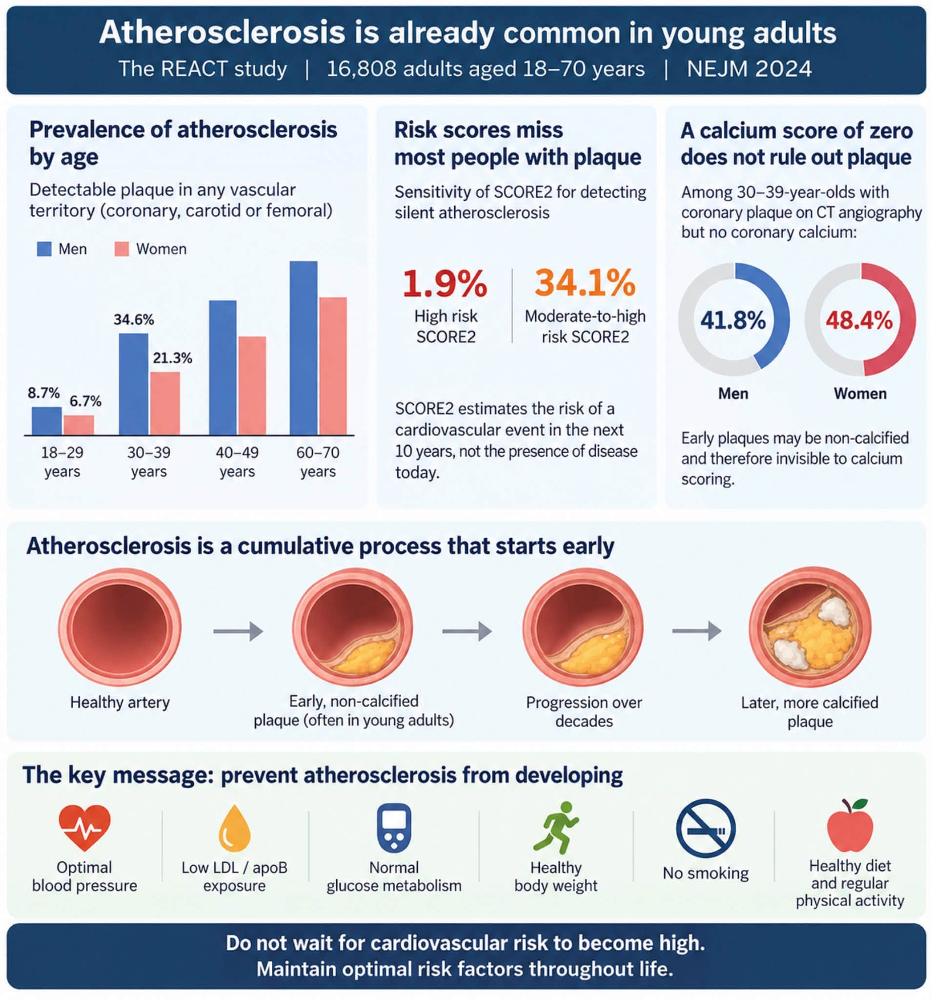

Higher-risk plaque without obstruction predicts risk just as well as lower-risk plaque that causes obstruction.
The stability of the plaque seems to matter just as much as the degree that it blocks arteries.
A DISCHARGE secondary analysis (n=1,745, 3.5 years) found high-risk plaque features on coronary CT predict MACE about as strongly as obstructive disease, and adding them improved discrimination. Louis notes plaque stability matters as much as blockage.
Higher-risk plaque without obstruction predicts risk just as well as lower-risk plaque that causes obstruction.
The stability of the plaque seems to matter just as much as the degree that it blocks arteries.
🫀 High-Risk Plaque on CCTA: More Than Stenosis
Can we predict events beyond luminal narrowing?
A prespecified secondary analysis of the DISCHARGE trial (n=1745, 3.5-year follow-up) evaluated whether high-risk plaque (HRP) features on coronary CT add prognostic value beyond traditional risk factors and obstructive CAD.🔍 HRP was defined as:
- Positive remodeling
- Low-attenuation plaque (≤50 HU)
- Napkin-ring sign
- Or CAC ≥400
📊 Results:
- HRP alone → ~3.8x higher risk of MACE (adjusted)
- Obstructive CAD alone → similar magnitude of risk
- HRP + obstructive CAD → ~8.8x higher risk
Importantly:
👉 HRP without ≥50% stenosis was as prognostically relevant as obstructive CAD without HRP.
👉 Adding plaque features improved discrimination (C-statistic increased from 0.70 to 0.75).This reinforces a crucial concept:
Risk lives in the plaque — not only in the lumen.A large proportion of events occurred in non-obstructive disease. Identifying HRP influenced preventive therapy initiation (statins increased substantially post-CT).
💡 Clinical implication:
CCTA is not just a gatekeeper to invasive angiography.
It is a risk stratification tool.If we embrace a treat-to-plaque approach, plaque morphology — and total atherosclerotic burden (CAC ≥400) — must be part of decision-making.
The future of coronary CT is not only detecting stenosis.
It is defining vulnerability.And vulnerability changes management.
Louis explains the DISCO-CT randomized trial, where a DASH diet plus statins produced the largest soft (non-calcified) plaque regression of any dietary trial on CT angiography. Adjusted to one year it was -39.5 mm3, versus an average at-risk person growing about 5 mm3 per year, so roughly 8 years of progression reversed. He notes the DASH diet was about 30% fat, mostly unsaturated, and adds caveats about interpretation.

Louis shares a chart of randomized trials showing plaque reversal with statins, ezetimibe and PCSK9 inhibitors, with total atheroma volume change plotted against LDL-C. Total plaque reversal ranged from about 5% to 17% in six older statin trials, measured by CT angiography or IVUS, and came from soft rather than calcified plaque. The chart suggests total plaque reversal begins once LDL falls below roughly 90 mg/dL.

The NEJM REACT study used carotid and femoral ultrasound plus coronary CT angiography in 16,808 adults aged 18-70 without known disease. Plaque was present in 57% overall, appeared in young adults, and a zero calcium score often missed early non-calcified plaque. Ten-year risk scores detected very little silent disease, so keeping risk factors favorable throughout life is the priority.
A video quoting the story of the first CT scan on 1 October 1971 in London, built by EMI engineer Godfrey Hounsfield, who shared the 1979 Nobel Prize with Allan Cormack. The post has no direct heart health content.

A Danish population study of 10,003 asymptomatic adults over 40 found subclinical coronary plaque less frequent in women at every age, for example 6% vs 20% at age 40-44. After 6 years, obstructive disease carried 4.1-fold higher MI risk in women versus 12-fold in men, though the sex interaction was not statistically significant.

Louis lists six randomized trials showing reversal of total atheroma volume with statins: COSMOS ~5%, SATURN ~5.5%, ASTEROID ~6.5%, IBIS-4 ~7.5%, STABLE ~8%, JAPAN-ACS ~17%. Reversals were measured by CT angiography or IVUS and came from soft rather than calcified plaque. A shared chart relates LDL to TAV change across statin, PCSK9 and ezetimibe trials.